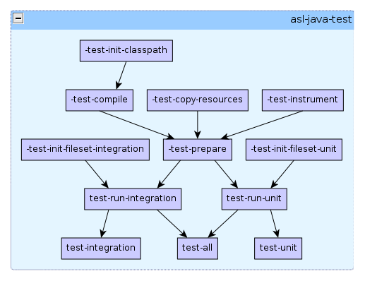

Ant Script Library: asl-java-test.xml
Overview
asl-java-test.xml contains properties and targets that are
used for testing Java projects using JUnit.
This module differentiates between unit tests and integration tests. Although both types of can be written using JUnit, they make different assumptions about the environment in which they are running:
- Unit tests make minimal assumptions about the environment in which they run - it should be possible to run them anywhere at any time
- Integration tests assume the existence of external dependencies, such at network resources, databases, applications servers, installed libraries or other software.
Because of the different requirements, it can be expected that these tests might need to be run at different times. By default, this module uses naming conventions to differentiate the different types of tests:
- If a class in the test folder ends in the word
IntegrationTest, it will be run from the test-run-integration target. This default can be overridden in the -test-init-fileset-integration target - If a class in the test folder ends in the word
Test(but excluding those classes that end inIntegrationTest), it will be run from the test-run-unit target. This default can be overridden in the -test-init-fileset-unit target
Properties
| Name | Default Value | Description |
|---|---|---|
java-test.src-dir |
src/test/java |
The root of the directory tree containing the test code |
java-test.classes-dir |
${common.target-dir}/test-classes |
The root of the directory tree containing all compiled test classes and resources. |
java-test.test-data-dir |
${common.target-dir}/test-data |
The directory containing all the generated test result data. |
java-test.instrumented-classes-dir |
${common.target-dir}/instrumented-classes |
The directory containing instrumented system classes (see the -test-instrument target) |
java-test.instrumented-datafile |
${java-test.instrumented-classes-dir}/cobertura.ser |
The file containing instrumentation results (see the -test-instrument target) |
Targets

test-all
Runs both unit tests and integration tests through dependencies on the test-run-unit and test-run-integration targets. This target will fail the entire build if any of the tests have failed.
test-integration
Runs the integration tests only through a dependency on the test-run-integration target. This target will fail the entire build any of the integration tests have failed.
test-unit
Runs the unit tests only through a dependency on the test-run-unit target. This target will fail the entire build if any of the unit tests have failed.
test-run-integration
Runs the integration tests only. Test results will be stored in xml
format in the ${java-test.test-data-dir} folder.
Instrumentation statistics will be stored in the file
${java-test.instrumented-datafile}.
test-run-unit
Runs the unit tests only. Test results will be stored in xml format in
the ${java-test.test-data-dir} folder. Instrumentation
statistics will be stored in the file ${java-test.instrumented-datafile}.
-test-init-fileset-integration
Initialises a fileset with id java-test.integration-fileset,
which is used to select the classes to run for the integration tests. By
default, all classes matching the name pattern
<include name="**/*IntegrationTest.class"/> within the folder
${java-test.classes-dir} are included
-test-init-fileset-unit
Initialises a fileset with id java-test.unit-fileset,
which is used to select the classes to run for the integration tests. By
default, all classes matching the name pattern
<include name="**/*Test.class"/>, but excluding those
classes matching the pattern
<exclude name="**/*IntegrationTest.class"/> within the folder
${java-test.classes-dir} are included
-test-prepare
This is an empty target, it simplifies the dependencies on the targets used to prepare for running the unit tests.
-test-instrument
Processes the compiled code in ${java-build.classes-dir} to
add instrumentation instructions, allowing a code coverage report to be
generated. The instrumented classes are created in the directory
${java-test.instrumented-classes-dir}. Instrumentation data
is stored in the file ${java-test.instrumented-datafile}
-test-compile
Calls javac on the source code in
${java-test.src-dir}, with the generated classes being put into
the directory ${java-test.classes-dir}. The classpath used in
compilation is defined by the path with
id="java-test.classpath" (which is defined by the target
-test-init-classpath by
default).
-test-copy-resources
Copies all files that don't have a .java extension from
${java-test.src-dir} to ${java-test.classes-dir}.
This ensures that all resources required by the Java test classes will be
available when running the tests.
-test-init-classpath
Defines a path
with id "java-test.classpath". This path is used by the
javac task in the -test-compile
target. By default, this path will contain everything within the path with
with id "java-build.classpath", as well as the distributable
jar
Is there a problem or mistake on this page? Do you want to contribute some changes? Send me an email at joe@exubero.com.